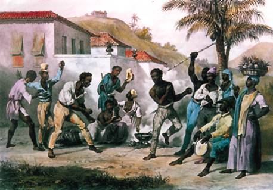
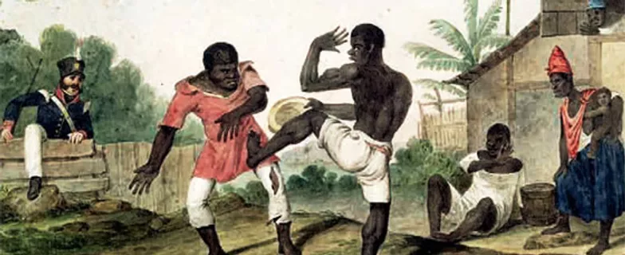

-
Jogo de perguntas e respostas corporais
A Capoeira, é uma das manifestações culturais mais importantes do Brasil. Surgida do encontro, em terras brasileiras, principalmente das culturas do índio, do negro e do português, tornou-se um dos mais importantes símbolos do Brasil. Trata-se de uma das manifestações culturais da corporeidade humana, a qual é baseada em um diálogo corporal, no qual terá maior destaque o jogador que fizer mais perguntas corporais do que as respostas corporais obtidas, ou então aquele capaz de apresentar mais argumentos corporais do que as perguntas corporais que lhe foram feitas. Neste diálogo entrarão em jogo os braços, as pernas, a cabeça e os jeitos corpo.
A primeira citação do vocábulo foi feita pelo Padre Fernão Cardim (SJ) na obra: Do Clima e da Terra do Brasil1 , editado em 1577, onde se destaca o texto: “Ao lomgo de huma rossa que Frco. Frz., feitor da dita casa tem derrubado, saindo as capoeiras que foram de Anto. Frz.”. Em outras obras jesuíticas que se sucederam, novamente o vocábulo capoeira foi registrado, em todos mantendo o significado de vegetação secundária. Ainda hoje, a discussão sobre o vocábulo parece ser interminável.
Com o advento das invasões holandesas, na Bahia e em Pernambuco, no século XVII, principalmente a partir de 1640, houve uma desorganização generalizada no litoral brasileiro, permitindo que muitos escravos fugissem para o interior do país, estabelecendo-se em centenas de quilombos, tendo como conseqüência o contato ora amistoso, ora hostil, entre africanos e indígenas. Tendese a acreditar que o vocábulo, de origem indígena Tupi, tenha servido para designar negros quilombolas como “negros das capoeiras”, posteriormente, como “negros capoeiras” e finalmente apenas como “capoeiras”. Cabe ressaltar, que nunca houve nenhum registro da Capoeira em qualquer quilombo. Sendo assim, aquilo que antes etimologicamente designava “mato” passou a designar “pessoas” e as atividades destas pessoas, “capoeiragem”.
-
Luta

Não há, desta forma, nenhuma relação entre o significado deste vocábulo, na sua acepção original ou a obtida nos movimentos quilombolas, com sua forma enquanto “Luta”, cuja mais antiga citação nos foi fornecida por Hermeto Lima, ao nos afirmar que “segundo os melhores cronistas, data a capoeiragem, de 1770, quando para cá andou o Vice-Rei Marques do Lavradio. Dizem eles também que o primeiro capoeira foi um tenente chamado João Moreira, homem rixento, motivo porque o povo lhe apelidou de "amotinado". Viam os negros escravos como o "amotinado" se defendia quando era atacado por 4 ou 5 homens, e aprenderam seus movimentos, aperfeiçoando-os e desdobrando-os em outros dando a cada um o seu nome próprio. Como não dispunham de armas para sua defesa uma vez atacados por numeroso grupo defendiam-se por meio da "capoeiragem", não raro deixando estendidos por uma cabeçada ou uma rasteira, dois ou três de seus perseguidores” 2
Este texto de Hermeto Lima, se alinha com o de Macedo, que nos afirma que “o Tenente "Amotinado" era de prodigiosa força, de ânimo inflamável, e talvez o mais antigo capoeira do Rio de Janeiro, jogando perfeitamente, a espada, a faca, o pau e ainda de preferência, a cabeçada e os golpes com os pés” 3
Com isto, o vocábulo “Capoeira” passou a estar associado a uma forma de luta, atrelada às estratégias de sobrevivência da população negra, que “resistiu e cedeu, agrediu e foi agredida”. Esta situação acabou, de alguma forma, fixando seus significados em comportamentos considerados ilegais ou criminosos, que foram rigorosamente punidos pela polícia a cada época. Muitas destas ações tiveram como pano de fundo a repressão à luta dos escravos pela liberdade e aos mesmos enquanto grupo, com o aumento gradativo da população de negros libertos ou alforriados, quando, principalmente a partir do séc. XIX. Assim, o que antes se constituía numa ação contrária a um determinado grupo étnico, passou a ser um combate a um procedimento cultural. A Capoeira, que se disseminava com grande força, atingia boa parte da população branca, conforme nos indica Soares ao afirmar que “inúmeros jovens, mesmo alguns da elite, eram facilmente seduzidos pela beleza da acrobacia e da agilidade, que hoje faz o sucesso da Capoeira nas gerações mais novas. A faixa etária daqueles presos como capoeiras, denota a majoritária presença de jovens entre 15 a 25 anos” . Desta forma, passou a se constituir numa prática indesejada e que deveria ser extirpada do seio da sociedade.
-
ref: http://www.educadores.diaadia.pr.gov.br/arquivos/File/fevereiro2012/educacao_fisica_artigos/capoeira_origem_historia.pdf